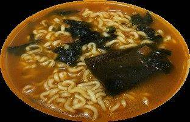
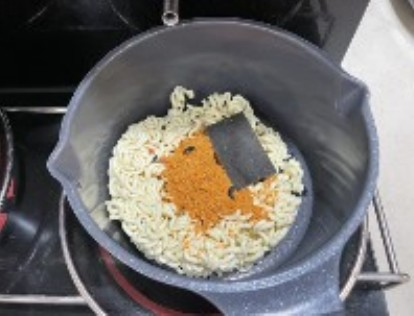
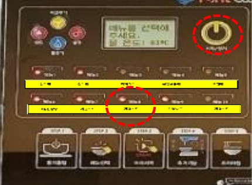
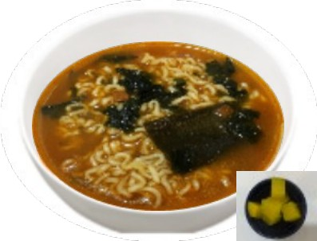
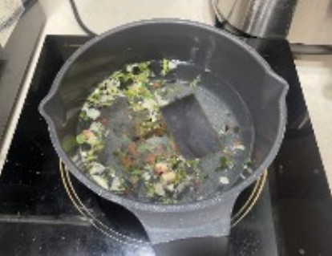
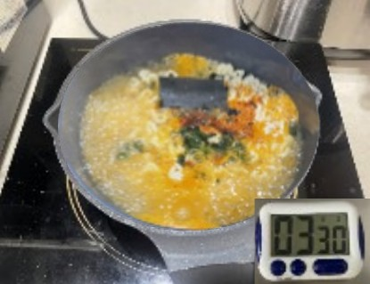
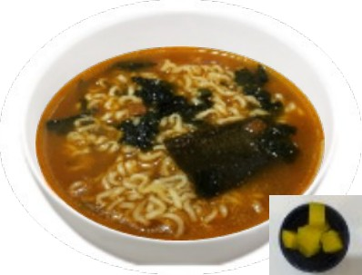

| 메뉴명 | 얼큰 너구리 |
|---|---|
| 판매가격 | 4,500원 |
| 원재료 | 얼큰 너구리 |
| 사용 부자재 | 라면용기 |
| 메뉴특징 | 오동통 면발에 다시마가 들어가 얼큰한 국물이 끝내주는 라면 |
※ 제조 후 최대한 빨리 제공할 것.
※ 모드 설정법 : 기계 및 위생 매뉴얼 <라면조리기 사용 매뉴얼> 페이지 참조



※ 기존 라면조리기 : [일반라면] 모드로 조리하기



※ 토핑 추가 ※
▶ 계란 : 타이머 1분 남았을 때 넣기
▶ 만두 : 4개, 물이 끓어서 면을 넣을 때, 함께 넣기
▶ 치즈 : 마지막에 올리기 (치즈를 먼저 꺼내 놓지 않기)